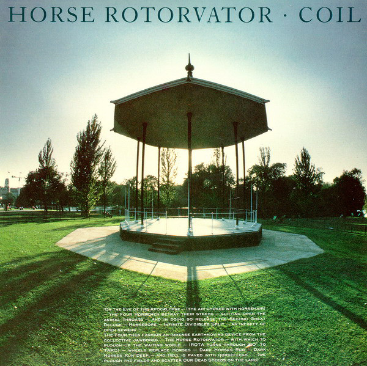
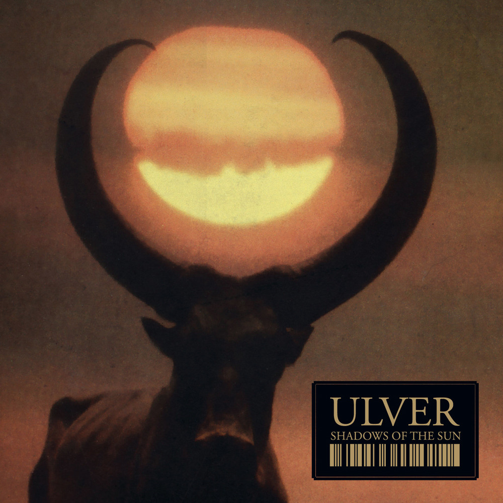
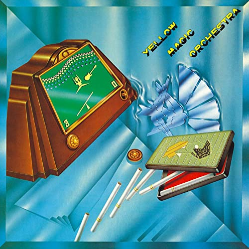
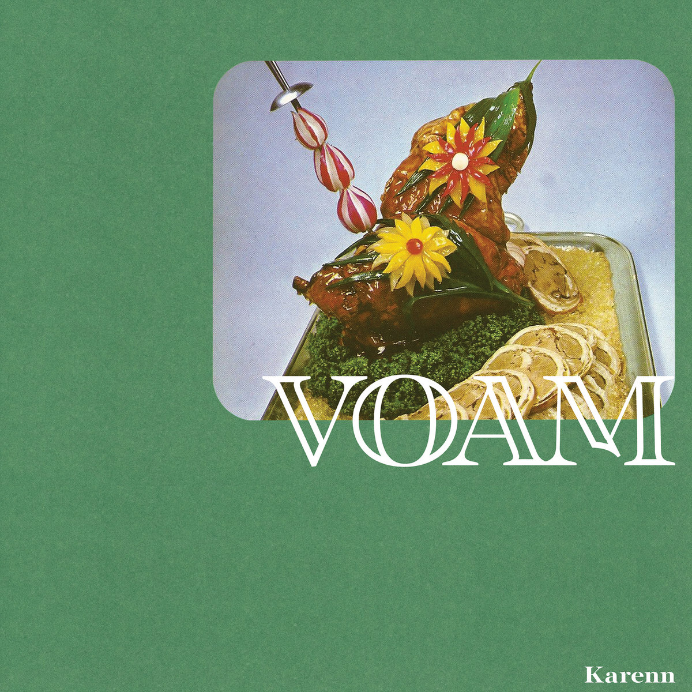

Julian's Secret Domain - Music Reviews
Back to home page
Coil - Horse Rotorvator (1986)
A real classic of industrial.
4.5/5
Ulver - Shadows of the Sun (2007)
Infinitely digestible ambient/new age balladry with simple but effective lyrics. Agreeable atmosphere offset by some delectable electronic experiments, including contributions from cult hero Christian Fennesz.
4.5/5
Yellow Magic Orchestra - s/t (1978)
I utterly adore this band. Their brand of chirpy synthpop sends me into irresistible fits of panicked fidgets. Every time I listen to first-song-proper Firecracker it feels like the most important song in the world. Essential listening!
4/5
Karenn - Grapefruit Regret (2019)
Eight tracks of organic, slippery analogue techno from the duo of Blawan and Pariah. Standout tracks Strawbz and Raz slither along with powerfully venomous rhythms, while the masticated trance leads of Crush the Mushrooms inject some lighthearted undertones to this record.
3.5/5